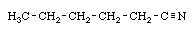
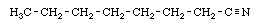
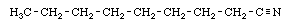
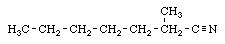
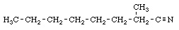
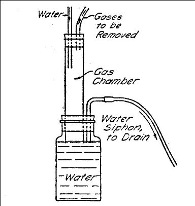

Appendix Eight
The nitriles required for the synthesis according to method I are as follows;
THC: Penatanenitrile,

THC-II. Hexane-nitrile,

THC-III: Octane-nitrile,

THC-IV: Nonanenitrile,

THC-V: 2-methyl-heptane-nitrile,

THC-VI: 2-methyl-octane-nitrile,

(Sometimes the alkyl "e" is changed to ''o", as in pentanonitrile, 2-methyl-heptano-nitrile, etc.).
The first four are commercially available but can be prepared if desired by the method of (Reference 421) or by one of the earlier methods given there in references. Preparation of the nitriles required for THC-V and THC-VI, and also for the variants described in Appendix Ten, can be carried out in two steps from the corresponding acids (e.g. 2-methyl-heptanoic acid gives the 2-methyl-heptano-nitrile used for THC-V) by the method described by Krynitsky (Reference 416), however it is much more convenient to prepare these materials by the condensation of a simple nitrile and halogenated alkane in the presence of a strongly basic catalyst. The general reaction of suitable mono-nitriles is described in the review (??? ) Where variations in the procedure can be found. However, the examples below should be sufficient.
The condensation is usually carried out with sodamide in a solvent such as
liquid ammonia (available in pressure cylinders from refrigeration specialists),
benzene, or ether. Sodamide prepared directly before use in liquid ammonia gives the highest yields and as a result this method was used in (Reference 407) to prepare all four nitriles required for THC-V,THC-VI,THC-VII, and THC-VIII. It is not too difficult to work with liquid ammonia and details are given in example 1. It is also possible to use commercial sodamide in benzene or ether but the yields are lower (as low as 20% with old sodamide). Recently sodamide has become available as a fine suspension in benzene or toluene. Use of this material should give yields as good as obtained with the fresh prepared material in liquid ammonia and is recommended. Also in recent years sodium hydride has been used in place of sodamide for similar condensations and has given results often superior. Although the second example has been described for sodamide, it is recommended that an experiment be carried out by the method of the second example substituting sodium hydride, if the method of the first example is not convenient.
A recent report has indicated that this condensation may be carried out most conveniently using commercial lithium amide in solvent (Cheney; J. Organic Chemistry, 17, page 770, 1952)
Both sodamide (sodium amide) and sodium hydride are highly caustic bases and should be handled with great care (precautions are given by Hurd, in Chemistry of the Hydrides, John Wiley & Sons, N.Y., (1952). If contacted by water or moisture reaction can be explosive and they are a fire hazard.
The following chart shows the alkyl halide and mono-nitrile used to prepare each of the intermediates for THC-V, THC-VI, THC-VII, and THC-VIII. The particular halide shown was used in (Reference 407), but substitution of bromo for chloro or vice-versa can be made if the weight used is adjusted to keep the same molar proportion. (THC-VI has not actually been prepared by this method).
THC-V: 2-methyl-heptano-nitrile.
>From 27.6 grams (0.5 mole) propionitrile and 53.3 grams (.5 mole) of 1-chloro-pentane. Yield 64% of theory, b.p. 56 deg C./ 5 mm., or (calculated) 185 deg. C./ 25 mm, or 192 deg. C./ 25 mm (also calculated) at ordinary atmospheric pressure.
THC-VI: 2-methyl-octano-nitrile.
>From 27.6 grams propionitrile and 60 grams 1-chloro-hexane.
THC-VII: 2,3-dimethyl-heptano-nitrile.
>From 27.6 grams propionitrile and 83 grams 2-bromo-hexane. yield 57% (unreacted 2-bromo-hexane recovered in distillation of reaction product). The product is obtained 97% pure, about 60 grams. b.p. 59 deg C./ 3 mm. or (calculated.) 190 deg C./ 25 mm. or 210 deg C./at normal atmospheric pressure.
THC-VIII: 2,2-dimethyl-heptano-nitrile.
>From 23 grams isobutyronitrile and 53 grams 1-chloro-pentane. The yield is 53% (alkyl halide recovered) of product 97% pure.
The mechanics of the following preparation of the nitriles intermediate for THC-V through THC-VIII is based on the procedure of Hancock and Cope, in Organic Syntheses. This is somewhat simpler than that used in (Reference 407), and should give good results. The main point of difference is that in (Reference 407) the ammonia solution is prepared in a liter flask fitted with dry-ice cooled condenser and take-off stopcock at the bottom to permit dropwise addition of the sodamide-nitrile-liquid ammonia solution to the alkyl halide solution in another dry-ice-condenser fitted flask. The present procedure should give as good results, but care should be taken that the addition of nitrile to the liquid ammonia solution is carried out slowly.
Example One: A one-liter two necked Pyrex flask is fitted with a reflux condenser with attached soda-lime drying tube (soda-line is a common drying agent commercially available) which is connected by a rubber tube to an open-air vent, or preferably to a gas absorption device such as illustrated:

Any ammonia vapor evolved in the reaction flask is led through the drying tube (important) and absorbed in the gas chamber by a flow of running water. The water in the lower flask serves as a seal. The absorption chamber can be assembled from readily available glass tubing, rubber stoppers, and a wide-mouthed bottle. As described by Hancock, the flask is also fitted with mercury sealed stirrer, but this can be omitted and replaced by frequent hand-swirling of the reaction flask. Before setting up, the flask should be dried in an oven and assembled rapidly to exclude moisture. It is also possible to set the apparatus in a hood, to vent any ammonia which might escape accidentally.
The assembled flask is set in a cooling bath of dry-ice and trichloroethylene (or dry-ice-acetone can be used) and when cold there is added through the open neck 500 ml. of anhydrous (refrigeration grade) liquid ammonia from an ammonia cylinder which is either inverted or equipped with a siphon tube. One gram of ferric nitrate nonahydrate is added, followed by a small cube of sodium metal (before assembling the apparatus a total of 11.5 grams (0.5 gram-atom) is cut into small pieces, weighed, and kept under kerosene in a small beaker). To ensure a fresh surface the cube is cut, blotted rapidly with filter paper, and added rapidly to the liquid anmonia. The flask neck is closed with a stopper and the bath of dry-ice is removed. Stir or swirl the solution until it is clear reaction is taking place, cooling as necessary in the dry-ice bath to keep the temperature somewhat below the point at which the ammonia begins to boil. The remaining sodium is then added in portions and the solution swirled until the blue color has been replaced by a gray precipitate, indicating that formation of the sodium amide is completed.
The stopper is then replaced by a similar stopper bearing a dropping funnel, and the flask again cooled in the dry-ice bath. Addition of the appropriate nitrile (27.6 grams or 0.5 mole propionitrile are used; see chart above) is then made from the dropping funnel at such a rate that the ammonia does not boil, taking at least 10 minutes. After the addition the mixture is swirled in the flask another 10 minutes, keeping the temperature just below the boiling point. 53.3 grams of 1-chloro-pentane (0.5 moles; for THC-V, for the other variants see chart above) is then placed in the dropping funnel and after again thoroughly cooling the flask in the dry-ice bath it is allowed to drip slowly into the liquid ammonia solution of the nitrile. The addition is made slowly, at such a rate that the reaction does not get out of control and cause the ammonia to boil out of the flask. When the addition is completed the mixture is swirled by hand for 10 minutes with frequent cooling in the dry-ice, then it is allowed slowly to come to the boil and kept at a gentle boil with necessary cooling until the ammonia has all evaporated.
When all the solvent ammonia has evaporated (about three hours), there is added 200 ml. of diethyl ether, followed by 200 ml. of water. The water is added cautiously at first, until it is clear that any unreacted sodamide has been decomposed. The two layers are separated and the aqueous layer extracted with two 100 ml. portions of ether. The three ether solutions are combined and washed several times with water, then dried with anhydrous magnesium sulfate. After distilling off the ether the residue is fractionated to give about 40 grams of the nitrile intermediate for THC-V, 2-methylheptano-nitrile, b.p. 56 deg C./ 5 mm. pressure. For boiling point at water-pump reduced pressure and the boiling points of the other nitrile intermediates see chart above. (Reference 407 and 419)
Example Two. The reaction is carried out similarly using benzene as solvent, without the need for the very low temperature used above. The nitrile (0.5 mole) is dissolved in twice its volume of benzene and with stirring from a dropping funnel there is added with stirring an equimolar amount (20 grams) of commercial sodamide (sodium amide) which has been around to a fine powder under benzene is added in benzene suspension. As above, a drying tube is used to protect against atmospheric moisture. After the addition the temperature is raised by a hot water bath (70-75 deg. C.) to the reflux, and this is held for eight hours. The flask is cooled in an ice bath and with continued cooling the addition of 0.5 mole of the alkyl halide is made dropwise from a dropping funnel over 1-2 hours, after which the mixture is allowed to warm to room temperature. The reaction product is then stirred 10 more hours at room temperature, or stood 24 hours with frequent swirling. Water is cautiously added to decompose the sodamide and the two layers are separated. The aqueous layer can be extracted with benzene and the combined benzene solutions fractionated as above. (Reference 420)
Appendix Seven
Appendix Nine